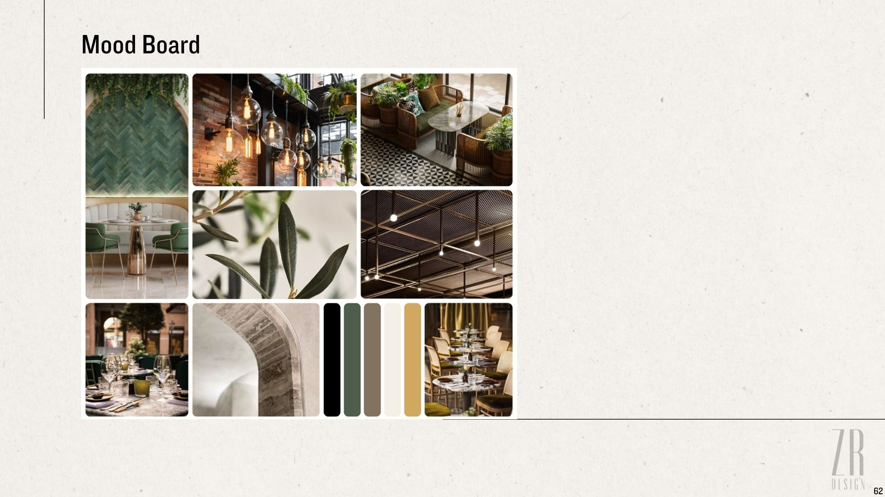
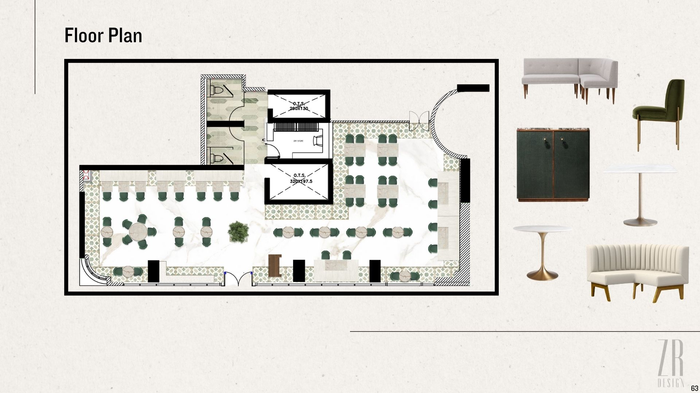
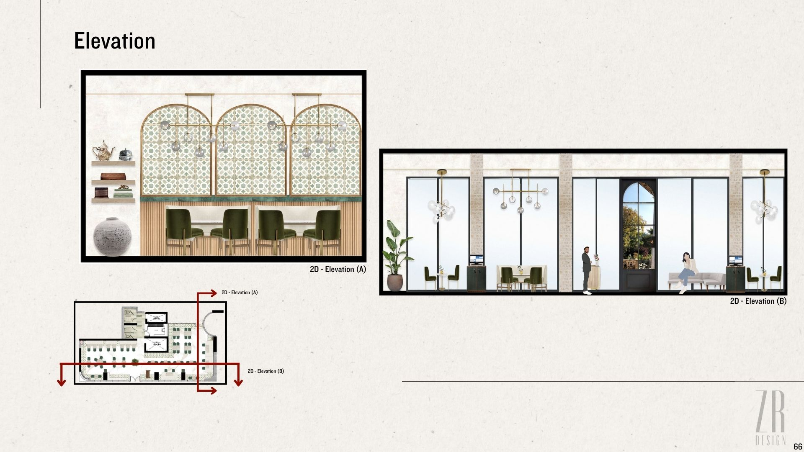
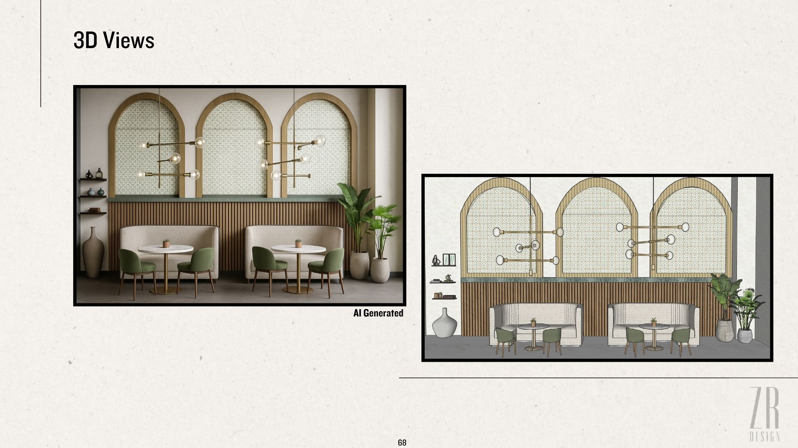

Roma Restaurant Project
A project focused on designing a vibrant and productive environment for a modern restaurant concept.




Project Overview:
This project involved creating an inviting and functional space for the new Roma Restaurant. The design focused on blending modern aesthetics with a warm, welcoming atmosphere suitable for diverse clientele. Emphasis was placed on efficient layout, strategic lighting, and unique decorative elements to enhance the dining experience.
Design Elements:
- Open-concept dining area with flexible seating arrangements.
- Incorporation of natural materials like wood and stone.
- Custom lighting fixtures to create ambiance.
- Statement wall art and greenery to add character.
- Ergonomic and stylish furniture selection.